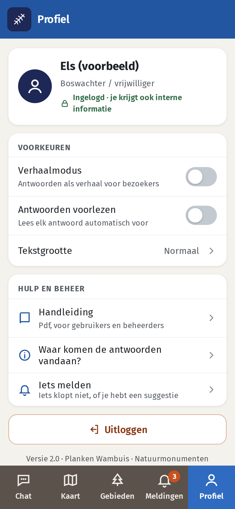
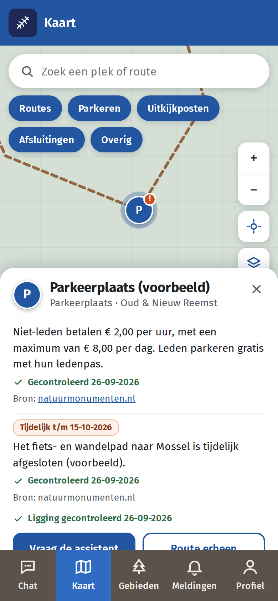
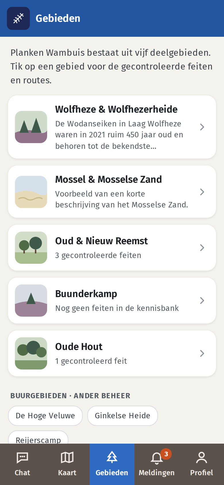
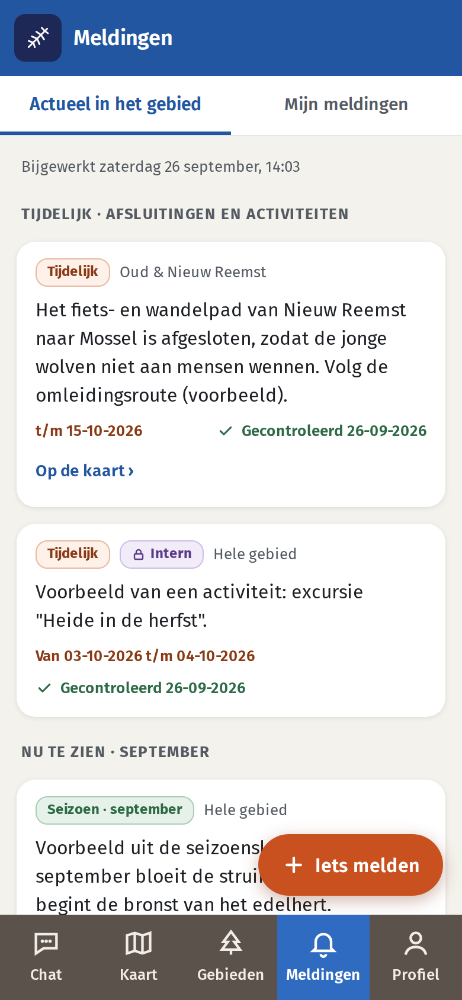
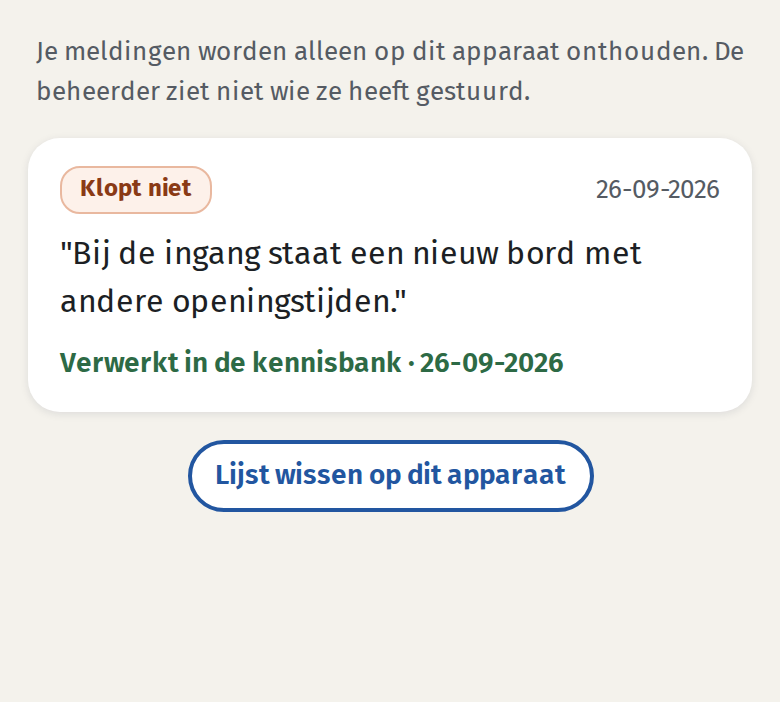
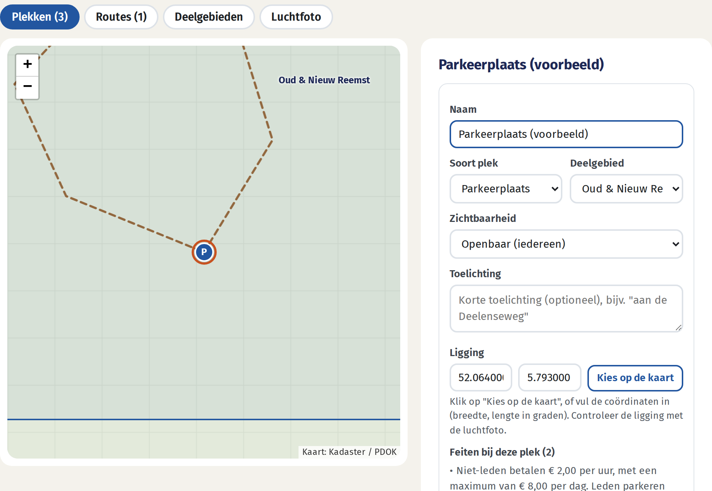

Deel 1
Voor boswachters en vrijwilligers
De assistent gebruiken in het werk
1.1 Wat is de Boswachter Assistent?
De Boswachter Assistent helpt je bij bezoekersgesprekken in Planken Wambuis. Dat zijn ook Wolfheze en de Wolfhezerheide, Mossel en het Mosselse Zand, Oud en Nieuw Reemst, de Buunderkamp en het Oude Hout. Je stelt een vraag in gewone taal en krijgt een antwoord met achtergrond en gesprekstips. Je eigen kennis en die van je collega's blijven leidend.
| Tabblad (onderin) | Waarvoor |
|---|
| Chat | Vragen stellen. Antwoorden met voetnoten en bronnen, en een kaartje als het over plekken gaat. |
| Kaart | Parkeerplaatsen, uitkijkposten, routes en tijdelijke afsluitingen, met de gecontroleerde feiten erbij. |
| Gebieden | Per deelgebied de gecontroleerde feiten en routes. Met één knop stel je een vraag over dat gebied. |
| Meldingen | Wat er nu speelt: afsluitingen en activiteiten, de seizoenskalender van deze maand en nieuws. Zelf iets melden, en zien wat er met je melding is gebeurd. |
| Profiel | Inloggen, voorkeuren (verhaal, voorlezen, tekstgrootte), deze handleiding en het beheerpaneel. |
- Adres: pwpb2.vercel.app, op telefoon, tablet en computer. Vragen stellen werkt alleen met internet; Kaart, Gebieden en Meldingen tonen zonder verbinding de laatst geladen stand, met datum.
- Op je telefoon zetten: open het adres en kies in het menu van de browser Zet op beginscherm (iPhone: deelknop → Zet op beginscherm).
- Buurgebieden zoals De Hoge Veluwe, de Ginkelse Heide en de Reijerscamp horen er niet bij. De assistent noemt ze alleen als buurgebied.
1.2 Inloggen en voorkeuren (Profiel)
Van de beheerder krijg je een persoonlijke link, via mail of WhatsApp. Open die link één keer op elk apparaat dat je gebruikt. Daarna blijf je ingelogd.
- Ingelogd krijg je ook interne informatie, bijvoorbeeld uit Kiek; die herken je aan het label Intern. Niet ingelogd werkt de assistent ook, maar alleen met openbare informatie.
- Onder Profiel zie je of je bent ingelogd en kun je uitloggen. De begroeting in de chat gebruikt je voornaam.
- Voorkeuren: Verhaalmodus (antwoorden als verhaal voor bezoekers), Antwoorden voorlezen (automatisch) en Tekstgrootte (normaal, groot, extra groot). Ze gelden alleen op dit apparaat.
- Je link is persoonlijk: deel hem niet. Kwijt, of een nieuwe telefoon? Vraag de beheerder om een nieuwe link. De oude werkt dan niet meer.

Het tabblad Profiel
1.3 Een vraag stellen (Chat)
- Eigen vraag: typ je vraag onderin en tik op de oranje verstuurknop.
- Snelle vragen: tik op een van de drie suggesties in de begroeting, of op de + naast het invoerveld voor meer onderwerpen, zoals Talking points, Begrazing, De wolf en Leden werven.
- Verhaal: met de schakelaar rechtsboven krijg je het antwoord als verhaal voor een bezoekersgesprek: een sfeervolle opening, een "Wist je dat…", het feit, een vraag aan de bezoeker en gesprekstips.
- Extra's: Voorlezen leest het antwoord voor. De knop ▶ naast een vogelnaam laat het geluid horen. Bij soorten verschijnen foto's. De balk bovenin toont het weer; tik erop voor vijf dagen.
Tips voor een goede vraag
- Elke vraag staat op zichzelf: de assistent onthoudt je vorige vraag niet. Zeg dus steeds waar het over gaat.
- Noem het deelgebied als dat uitmaakt, bijvoorbeeld "bij Oud Reemst". Vanuit Gebieden of de Kaart staat het gebied of de plek al ingevuld.
- Vraag liever één ding per keer dan vijf tegelijk.

Begroeting met drie snelle vragen
1.4 Wat voor antwoorden kun je verwachten?
Een antwoord begint met een korte inleiding. Daarna volgen kopjes per onderwerp, en vaak gesprekstips. Het antwoord is zo lang als nodig: kort als er weinig bekend is, uitgebreider als de kennisbank veel biedt. Zo herken je waar de informatie vandaan komt:
| Wat je ziet | Wat het betekent |
|---|
| Voetnoot 1 met "Kennisbank" in de bronnenlijst | Een feit uit de kennisbank dat een beheerder heeft gecontroleerd. De bronnenlijst toont onderwerp, deelgebied, controledatum (groen) en de oorspronkelijke bron. |
| mogelijk verouderd | Het feit is een tijd niet gecontroleerd. Waarschijnlijk klopt het nog, maar controleer het bij twijfel. |
| Voetnoot met "Website" in de bronnenlijst | Gevonden op een toegestane website, maar niet gecontroleerd door een boswachter. De bron en de datum staan erbij. |
| Blok Van website · niet gecontroleerd | Een aanvulling die de assistent nog zoekt terwijl jij het antwoord leest, zonder voetnootnummer. De links staan onder Bronnen aanvulling. Vindt de assistent niets, dan verschijnt er geen blok. |
| Kaartje met Open op kaart | Het antwoord gebruikt feiten die bij een plek op de kaart horen, bijvoorbeeld een parkeerplaats. |
| Tekst zonder voetnoot | Algemene natuurkennis (hoe een soort leeft, hoe begrazing werkt), een samenvatting of een gesprekstip. Een feit over het gebied zelf hoort altijd een voetnoot te hebben. Zie je er een zonder? Meld het. |
| "Dat weet ik niet" | Het staat niet in de kennisbank en niet op de toegestane websites. De assistent gokt niet en verwijst naar de boswachter of natuurmonumenten.nl. |
Links en midden: een voorbeeldantwoord in twee delen, met website-aanvulling, kaartje bij de parkeerplaats en de bronnenlijst (één feit is "mogelijk verouderd").
Rechts: het aantal boommarters staat niet in de kennisbank. De assistent zegt dat eerlijk, geeft wat wél bekend is (met voetnoot) en algemene kennis over de soort (zonder voetnoot).
Blijf kritisch
Deze maatregelen maken fouten veel minder waarschijnlijk, maar niet onmogelijk. Een feit kan bijvoorbeeld onhandig worden samengevat. Controleer belangrijke of verrassende feiten via de voetnoot voordat je ze aan bezoekers vertelt. Zie je een fout, meld die dan: zo wordt de assistent voor iedereen beter.
1.5 Kaart, Gebieden en Meldingen

Kaart met een gekozen plek

De vijf deelgebieden

Wat er nu speelt
- Kaart. Met de knoppen bovenin zet je Routes, Parkeren, Uitkijkposten, Afsluitingen en Overig aan of uit. Zoek op naam, of tik op een plek of route: onderin verschijnen de gecontroleerde feiten, met Vraag de assistent en Route erheen (opent de navigatie van je telefoon). Een oranje uitroepteken betekent een tijdelijke afsluiting of melding. Rechts zoom je, ga je naar je eigen locatie (die wordt nergens opgeslagen) en wissel je naar de luchtfoto. Alleen plekken die een beheerder heeft vastgelegd en gecontroleerd, staan op de kaart. Wolven, nesten, burchten en rustgebieden komen nooit op de kaart.
- Gebieden. Tik op een deelgebied voor de feiten (met controledatum en bron), de routes en de plekken op de kaart. Vraag de assistent over dit gebied opent de chat met het gebied al ingevuld.
- Meldingen. Onder Actueel in het gebied staan lopende afsluitingen en activiteiten met hun einddatum, wat er deze maand te zien is (seizoenskalender) en recent goedgekeurd nieuws van natuurmonumenten.nl. Een oranje getal op het tabblad betekent dat er iets nieuws is.
1.6 Fouten en opmerkingen doorgeven
"Klopt er iets niet?" onder een antwoord
- Tik onder het antwoord op Klopt er iets niet?
- Schrijf wat er niet klopt. Weet je het juiste feit en waar het staat? Zet dat erbij, bijvoorbeeld "folder 2026", "bord bij de parkeerplaats" of "Kiek-document …".
- Tik op Versturen.
De beheerder ziet je melding samen met je vraag, het antwoord en de gebruikte feiten. Je naam wordt niet meegestuurd.
Iets melden (tabblad Meldingen of Profiel)
Heb je iets los van een antwoord? Tik op de oranje knop Iets melden. Kies Er klopt iets niet of Suggestie, bijvoorbeeld een gewijzigde route of een nieuwe afspraak, en tik op Versturen.
Wat gebeurt er daarna?
De beheerder beoordeelt elke melding en suggestie. Pas na goedkeuring komt de informatie in de kennisbank. Onder Mijn meldingen zie je de status: ontvangen, in behandeling, verwerkt in de kennisbank, afgehandeld of niet overgenomen. Die lijst staat alleen op je eigen apparaat; de beheerder ziet niet wie een melding stuurde.

Melding bij een antwoord

Mijn meldingen met de status
1.7 Waar komt de informatie vandaan, en hoe voorkomen we fouten?
Bronnennatuurmonumenten.nl (elke zaterdag gecontroleerd), documenten uit Kiek en de bronnenmap, meldingen en suggesties
→
VoorstelNieuwe of gewijzigde informatie wordt eerst een voorstel
→
BeheerderControleert aan de bron en keurt goed of af
→
KennisbankGecontroleerde feiten met bron, datum, houdbaarheid en eventueel een plek op de kaart
→
AppChat met voetnoten, Kaart, Gebieden en Meldingen
Toegestane websitesNatuurmonumenten, overheden, soortenorganisaties en regionaal nieuws. Alleen als aanvulling in de chat, altijd gelabeld als "niet gecontroleerd"
→
AanvullingApart zichtbaar in het antwoord, met bron en datum
Zo bewaken we de juistheid
- Eén bron van waarheid. Feiten over het gebied komen alleen uit de kennisbank of van de vaste lijst websites. Kaart, Gebieden en Meldingen lezen dezelfde kennisbank. Weet de assistent iets niet, dan zegt hij dat.
- Niets zonder controle. Ook nieuws van natuurmonumenten.nl, jouw suggesties en plekken op de kaart komen eerst bij een beheerder terecht.
- Houdbaarheid. Elk feit heeft een controledatum en een termijn: vaste feiten 3 jaar, jaarlijkse feiten 12 maanden, seizoensfeiten per seizoen. Tijdelijke zaken, zoals een afsluiting, gelden tot hun einddatum en verdwijnen daarna. Is een termijn voorbij, dan staat er "mogelijk verouderd" bij.
- Herleidbaar. Via de voetnoten en de regel "Gecontroleerd …" zie je bij elk gebiedsfeit waar het vandaan komt.
- Tegenstrijdige bronnen. De nieuwste gecontroleerde bron wint. De oude tekst blijft bewaard.
- Controle achteraf. Vragen en antwoorden worden 90 dagen bewaard, zonder naam of IP-adres. De beheerder bekijkt elke week een steekproef en kan een fout feit met één klik intrekken.
- Openbaar en intern. Interne informatie krijgen alleen ingelogde boswachters en vrijwilligers te zien.
Deel 2
Voor beheerders
Wat je kunt aanpassen, en waar
2.1 Het beheerpaneel openen
- Ga naar pwpb2.vercel.app/beheer.html, of tik in de app op Profiel → Beheerpaneel; die regel zien alleen beheerders.
- Je logt in met je persoonlijke beheerderslink.
- De allereerste keer is er nog geen beheerder. Vul dan je naam en het beheerwachtwoord in en klik op Eerste beheerder aanmaken. Je krijgt je persoonlijke link te zien: bewaar die goed, als bladwijzer of in een wachtwoordkluis. Het wachtwoord werkt daarna niet meer.
- Links staat het menu (op een telefoon bovenin, schuifbaar). Een oranje getal betekent dat er werk wacht.
Tip: geef minstens twee mensen de rol beheerder. Is iemand de link kwijt, dan kan de ander een nieuwe maken.

Eerste beheerder aanmaken (eenmalig)
2.2 Overzicht
De tegels tonen wat er te doen is: voorstellen die wachten, meldingen "klopt niet", feiten die mogelijk verouderd zijn, het aantal actieve feiten en het aantal plekken en routes op de kaart. Klik op een tegel om naar de lijst te gaan. Daaronder staat het resultaat van de laatste wekelijkse controle van natuurmonumenten.nl, en de weekendlijst: vink af wat je hebt gedaan (wordt elke week leeg, alleen op jouw apparaat).
2.3 Voorstellen
Alles wat nog niet in de kennisbank staat, komt hier binnen. Het label toont de herkomst: Wekelijkse controle nm.nl Suggestie gebruiker Melding "klopt niet" Uit document Voorstel assistent.
Een voorstel beoordelen
- Lees de tekst en controleer die aan de bron (via de link). Pas hem aan waar nodig: één feit per blok, met vaste datums ("in 2033", niet "over zeven jaar").
- Kies onderwerp, deelgebied, type en zichtbaarheid. Kies intern voor informatie die niet voor bezoekers is. Hoort het feit bij een plek, kies dan de plek op de kaart.
- Vul de bron in, en als je die hebt ook de link en de datum van de bron.
- Klik op ✓ Goedkeuren. Het voorstel wordt direct een actief feit, gecontroleerd door jou op de datum van vandaag. Klopt het niet? Klik dan op ✗ Afwijzen. De melder ziet de uitkomst onder "Mijn meldingen".
Bij Wijziging bestaand feit zie je in oranje het huidige feit. Keur je de wijziging goed, dan vervangt die het oude feit. De oude tekst blijft in de historie.
Een document omzetten in voorstellen
Gebruik dit voor documenten uit Kiek of uit de bronnenmap. Klik op Tekst uit document omzetten in voorstellen. Vul de naam van het document in (die wordt de bron) en eventueel een link en datum. Kies de zichtbaarheid: intern voor Kiek-documenten. Plak de tekst en klik op Omzetten in voorstellen. Lange documenten worden in delen verwerkt, ongeveer een halve minuut per deel. Controleer daarna elk voorstel.
| Type | Waarvoor | Houdbaarheid |
|---|
| Vast | Naam, historie, ligging, landschap | 3 jaar |
| Jaarlijks | Aantallen (roedel, kuddes), ledental, prijzen, regels | 12 maanden |
| Seizoen | Wat er in bepaalde maanden te zien of te doen is; vink de maanden aan. Verschijnt ook onder Meldingen. | Gebruikt in die maanden en de maand ervoor |
| Tijdelijk | Afsluitingen, omleidingen, activiteiten; einddatum verplicht. Verschijnt onder Meldingen en, met een plek, als afsluiting op de kaart. | Tot de einddatum, daarna niet meer gebruikt |
2.4 Kennisbank
Hier staan alle feiten waarop de assistent, de kaart en de gebieden zijn gebaseerd. Filter op onderwerp, deelgebied en status: actief, mogelijk verouderd, tijdelijk afgelopen, intern, ingetrokken of alle. Een oranje kaart is mogelijk verouderd.
| Knop | Wat hij doet |
|---|
| + Nieuw feit | Zelf een feit toevoegen, met hetzelfde formulier als bij voorstellen. |
| Bewerken | Het feit aanpassen, ook de plek op de kaart en een foto (link naar een foto die je mag gebruiken, met de naam van de maker). Opslaan telt als controle, met de datum van vandaag. Feiten over de wolf krijgen nooit een plek. |
| ✓ Gecontroleerd | Het feit klopt nog. De controledatum wordt vandaag en de termijn begint opnieuw. |
| Intrekken / Heractiveren | Haalt het feit direct uit de app, eventueel met een reden, of neemt het weer in gebruik. Het blijft bewaard. |
| Historie | Wie wat wanneer heeft gedaan, inclusief oude teksten. |
2.5 Klopt niet
Hier komen de meldingen van gebruikers binnen: bij een antwoord met de vraag, het antwoord (Antwoord tonen) en de gebruikte kennisbankfeiten, of los vanuit Iets melden. Klopt de melding? Klik dan op → Maak voorstel en leg het juiste feit vast bij Voorstellen. Staat er een fout feit in de kennisbank? Trek het in bij Kennisbank. Is er niets te doen, klik dan op ✓ Afgehandeld. De melder ziet de uitkomst onder "Mijn meldingen".
2.6 Logboek
Alle vragen en antwoorden van de afgelopen 90 dagen, zonder persoonsgegevens: je ziet alleen of iemand niet ingelogd was, gebruiker of beheerder. De labels tonen hoeveel kennisbankfeiten er zijn gebruikt, of er websites zijn gebruikt (oranje) en of de verhaalmodus aan stond. Bovenaan staan het aantal vragen en de geschatte kosten over de laatste 30 dagen. Steekproef: open elke week een paar antwoorden. Klopt het antwoord, en kloppen de gebruikte feiten?
2.7 Websites & controle
Toegestane websites. De assistent zoekt op internet alleen op deze websites, inclusief subdomeinen. Standaard zijn dat natuurmonumenten.nl, bij12.nl, gelderland.nl, ede.nl, rijksoverheid.nl, wolveninnederland.nl, sovon.nl, vogelbescherming.nl, vlinderstichting.nl, ravon.nl, zoogdiervereniging.nl, waarneming.nl, gld.nl, edestad.nl en barneveldsekrant.nl. Voeg een site toe of verwijder er een, en klik op Lijst opslaan.
Wekelijkse controle van natuurmonumenten.nl. Elke zaterdag om 07:00 leest de assistent de pagina's in de lijst. Wat nieuw of anders is dan de kennisbank, wordt een voorstel. Goedgekeurd nieuws verschijnt twee maanden onder Meldingen. Met Nu controleren start je de controle direct; dat duurt ongeveer een minuut.
2.8 Kaart en plekken

Een plek bewerken: de oranje omcirkelde punt kun je verslepen
Wat je hier vastlegt, verschijnt op de kaart in de app, bij de gebieden en als kaartje in antwoorden. Opslaan telt als controle van de ligging. Met Luchtfoto controleer je of een punt op de goede plek staat.
- Plekken: klik op + Nieuwe plek en daarna op de kaart, of vul de coördinaten in. Geef een naam, de soort (parkeerplaats, uitkijkpunt, ingang, bezoekerscentrum, horeca, voorziening of overig), het deelgebied en de zichtbaarheid. De informatie bij een plek komt uit de kennisbank: koppel feiten via Kennisbank → Bewerken → Plek op de kaart. Een tijdelijk feit bij een plek maakt er een afsluiting van. Verwijder je een plek, dan blijven de feiten bestaan.
- Routes: klik op + Route uit GPX en kies een GPX-bestand, bijvoorbeeld de download bij een wandelroute op natuurmonumenten.nl. Lange routes worden automatisch vereenvoudigd. Kies eventueel het kennisbankfeit met de beschrijving van de route.
- Deelgebieden: per gebied de plek van de naam op de kaart, de grens (GeoJSON-bestand, bijvoorbeeld uit de GIS van Natuurmonumenten; RD-coördinaten worden omgerekend), een korte beschrijving voor het tabblad Gebieden en eventueel een foto.
Gevoelige plekken. Wolven, nesten, burchten en rustgebieden horen niet op de kaart. Namen en toelichtingen met zulke woorden worden geweigerd, en feiten over de wolf krijgen nooit een plek.
2.9 Achtergrondfoto
Achter de chat staat een foto die stil blijft staan; vragen en antwoorden schuiven eroverheen. Je kunt twee foto's uploaden: een staande voor telefoons en een liggende voor tablets en computers. De app kiest vanzelf de foto die bij de stand van het scherm past; is er maar één, dan geldt die overal. Kies een foto, geef aan welk deel het belangrijkst is (boven, midden of onder) en van wie de foto is; die naam staat klein in de hoek. De foto wordt vooraf verkleind; binnen een minuut is hij in de app te zien. Gebruik alleen foto's die je mag gebruiken. De foto's zitten niet in de back-up: bewaar de originelen zelf.
2.10 Gebruikers
- Nieuwe gebruiker: vul een naam in (de voornaam verschijnt in de begroeting), kies de rol (Boswachter / vrijwilliger of Beheerder) en klik op + Link maken. De link verschijnt maar één keer. Kopieer hem en stuur hem zelf door, via mail of WhatsApp.
- Nieuwe link: bij een verloren link of nieuw apparaat. De oude werkt daarna niet meer.
- Intrekken: de toegang is direct weg, bijvoorbeeld als iemand stopt. De laatste beheerder kun je niet intrekken.
- Rollen: gebruikers krijgen ook interne feiten te zien. Beheerders kunnen daarnaast het beheerpaneel gebruiken.
2.11 Back-up
Elke zaterdag wordt automatisch een back-up gemaakt van de kennisbank, voorstellen, websites, de kaart (plekken, routes, gebieden) en gebruikers (zonder inlogcodes). Back-ups worden 10 weken bewaard. Met Download huidige stand bewaar je een kopie op je eigen computer; doe dat bijvoorbeeld maandelijks. Met Terugzetten zet je kennisbank, voorstellen, websites en kaart terug naar een eerdere stand; de huidige stand wordt dan eerst als back-up bewaard.
Werkritme voor beheerders
Elk weekend (na de controle van zaterdag 07:00)
- Voorstellen beoordelen
- Meldingen "klopt niet" afhandelen
- Steekproef van 3 à 5 antwoorden in het logboek
- Feiten met "mogelijk verouderd" nalopen
- Nieuwe plekken of afsluitingen op de kaart zetten
Elke maand
- Back-up downloaden
- Kosten bekijken (logboek en Anthropic-console)
Per seizoen en bij wisselingen
- Seizoenskalender voor de komende maanden nalopen
- Links maken of intrekken bij nieuwe of vertrekkende mensen